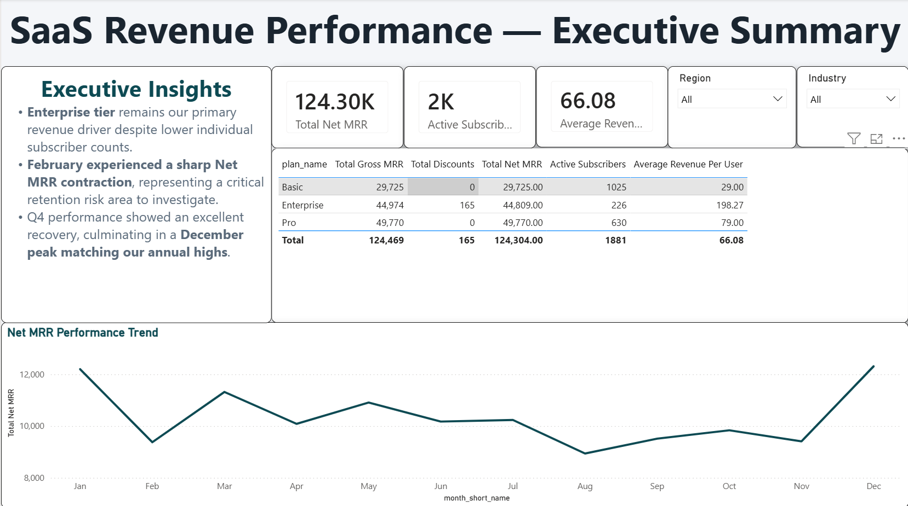

SQL · Power BI · DAXHarbourMetrics: SaaS Revenue & Retention Analytics
Solo · 2025Built a full end-to-end SaaS business intelligence platform simulating 2,000 customers across a 24-month history. Engineered MRR, churn, and cohort KPIs in PostgreSQL using window functions and CTEs, then modelled an executive Power BI dashboard with custom DAX measures, dynamic active subscriber tracking, and a premium corporate UX layer.
Key insights
Enterprise tier identified as primary revenue engine despite lower subscriber count; February churn spike and Q4 recovery pattern surfaced for strategic action
Method
PostgreSQL relational DDL, window functions, CTEs for MRR calculation; Power BI semantic model with DAX, Power Query, and executive storytelling canvas
- PostgreSQL
- Power BI
- DAX
- SQL
- Data Modelling
- KPI Engineering